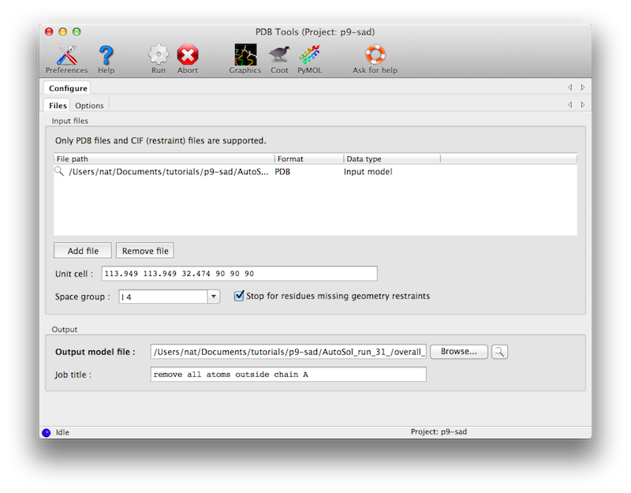
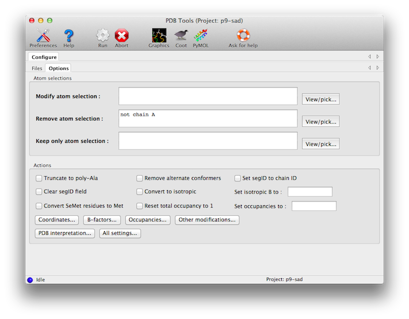

The operations below can be applied to the whole model or selected parts (e.g. "modify.selection=chain A and backbone"). See examples below.
The tutorial video is available on the Phenix YouTube channel and covers the following topics:
As input, only a PDB file and appropriate geometry restraints (in CIF format are required. (The geometry restraints are actually optional if you uncheck the box "Stop for unknown residues", but they are strongly recommended.) Crystal symmetry is not essential but also recommended, and will be propagated to the output model.

Many different options are possible, only some of which are shown in the main window. The atom selection controls can be used to specify which part of the model will be affected by various changes, or to eliminate parts of the model. The operations on coordinates, B-factors, and occupancies also have separate (optional) atom selections.

(Note: in past versions PDBTools was also responsible for geometry minimization and addition of hydrogen atoms using Reduce; these methods have been moved to the programs phenix.geometry_minimization and phenix.ready_set, respectively.)
Some specific examples:
1) Type phenix.pdbtools from the command line for instructions:
% phenix.pdbtools
2) To see all default parameters:
% phenix.pdbtools
3) Suppose a PDB model consist of three chains A, B and C and some water molecules. Remove all atoms in chain C and all waters:
% phenix.pdbtools model.pdb remove="chain C or water"
or one can achieve exactly the same result with equivalent command:
% phenix.pdbtools model.pdb keep="chain A or chain B"
or:
% phenix.pdbtools model.pdb keep="not(chain C or water)"
or finally:
% phenix.pdbtools model.pdb remove="not(chain A or chain B)"
The result of all four equivalent commands above will be a new PDB file containing chains A and B only. Important: the commands keep and remove cannot be used simultaneously.
4) Remove all water and set all b-factors to 25:
% phenix.pdbtools model.pdb remove=water set_b_iso=25
5) Suppose a PDB model consist of three chains A, B and C and some water molecules. Remove all but water atoms and set b-factors to 25 for chain C atoms:
% phenix.pdbtools model.pdb keep=water set_b_iso=25 modify.selection="chain C"